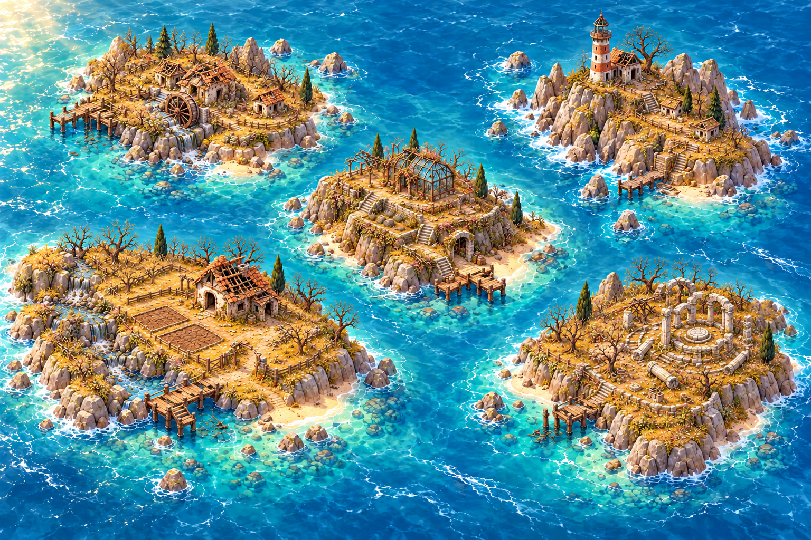
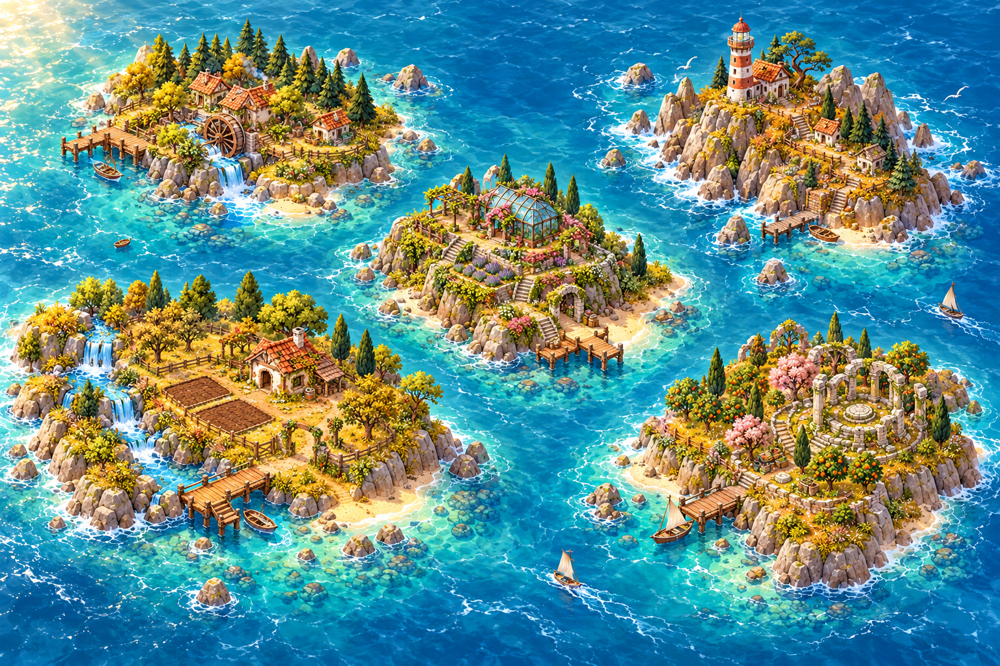

MOCHI
MOCHI A LITTLE CODE. A WHOLE WORLD.
Bring the islands back to life.
Help Mochi restore five forgotten islands — one small piece of code at a time.
05ISLANDS
1 AVAILABLE NOW
1 AVAILABLE NOW
STARTING WORLD · WAITING FOR RESTORATION
Sound is on · starts with your first tap.
Island 1 · 0 of 5 activities complete


FIVE FORGOTTEN ISLANDS. ONE NEW BEGINNING. ✧ N
Tap an island to discover what you’ll learn and restore.